We help manufacturers turn shop-floor data into reliable production schedules, lower scrap, and faster cycle times across supplier networks.

From plant-floor planning to supplier traceability, these are the performance gains modern manufacturers can unlock with the right ERP and automation systems.
Performance benchmarks based on factory operations, quality, and uptime.
Three essential stages for digital manufacturing success.
Production teams need a single source of truth for planning, quality, and supplier delivery. We connect ERP, shop-floor systems, and procurement so plant managers can stop reacting and start hitting targets consistently.
Release schedules shift too often because operations are driven by stale data.
Inconsistent inspection controls create scrap and rework after the line is already running.
Material shortages and untracked supplier changes disrupt production flow.
Lost production time and waste are hard to quantify without digital process visibility.
Separate planning, execution, and inventory tools make it hard to act on a single truth.
Faster changeovers and workforce coordination.
Better on-time material readiness and fewer line stoppages.
Reduced scrap, improved first-pass yield, and audit-ready records.
Real-time visibility into output, capacity, and downtime causes.